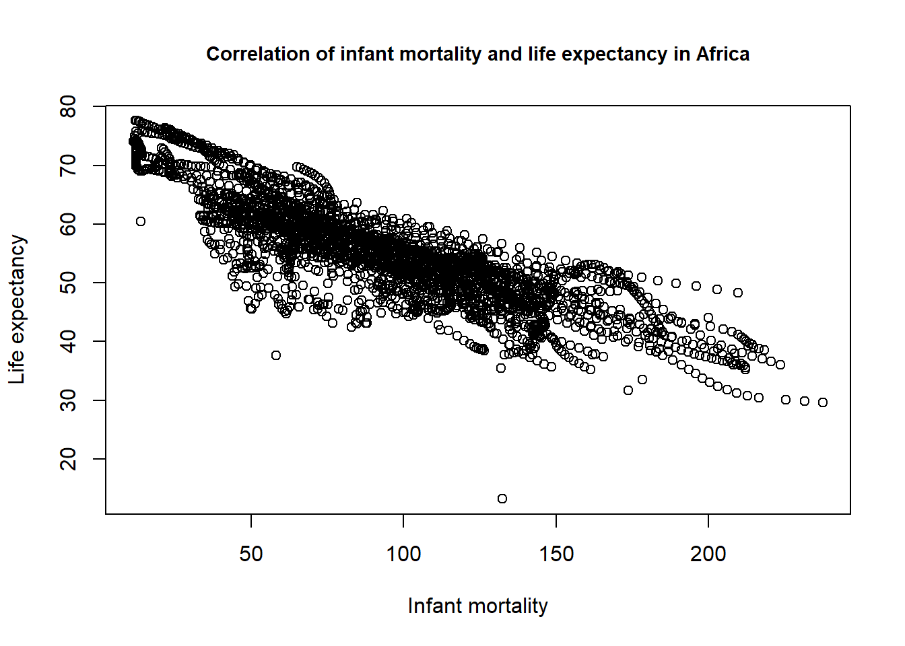
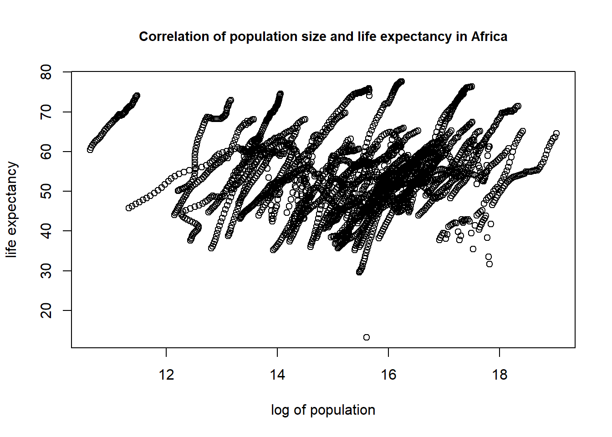
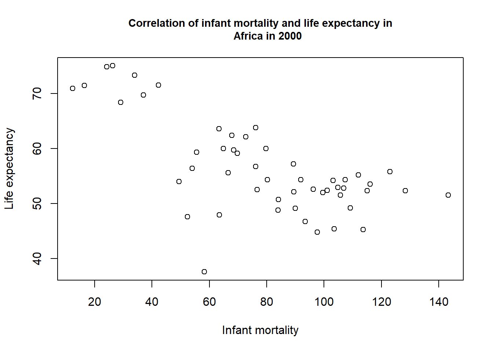
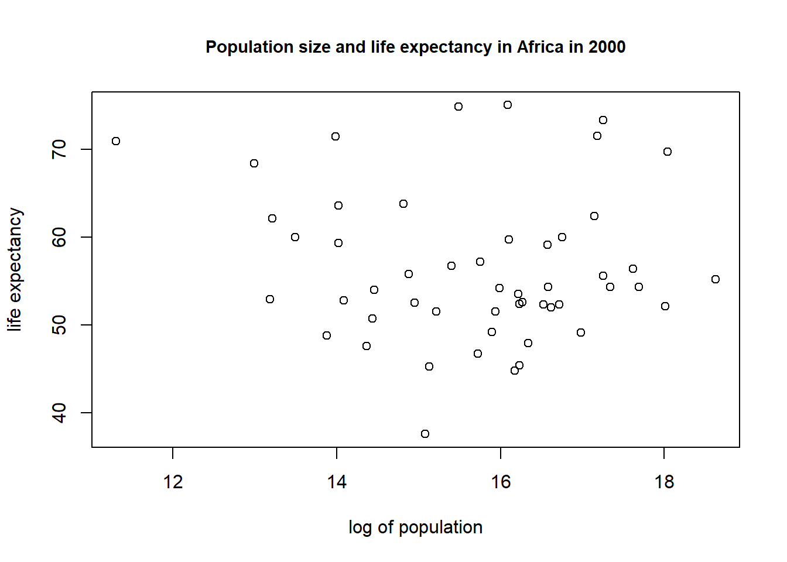
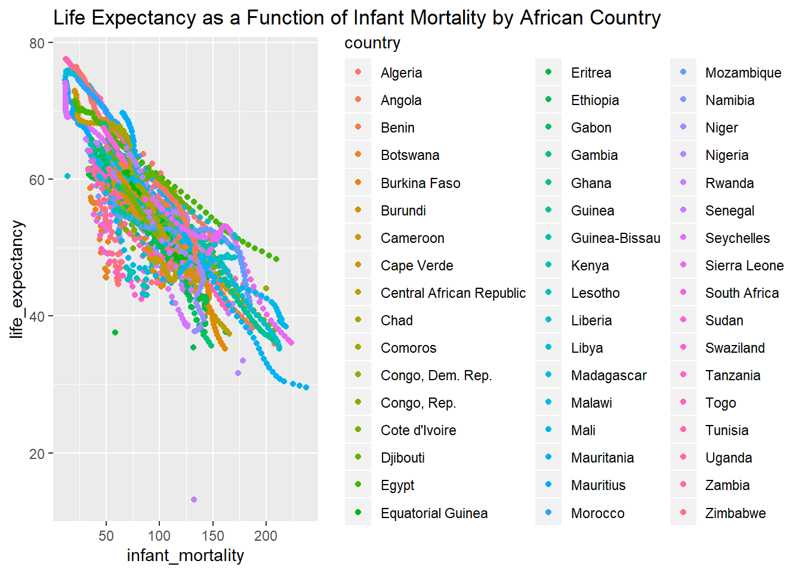
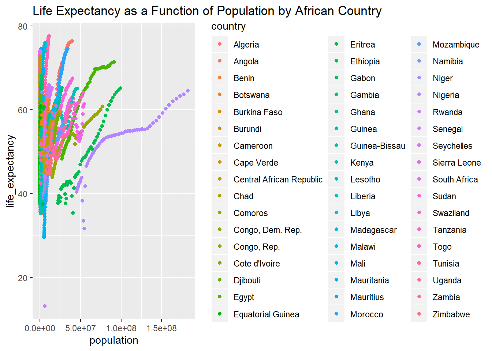
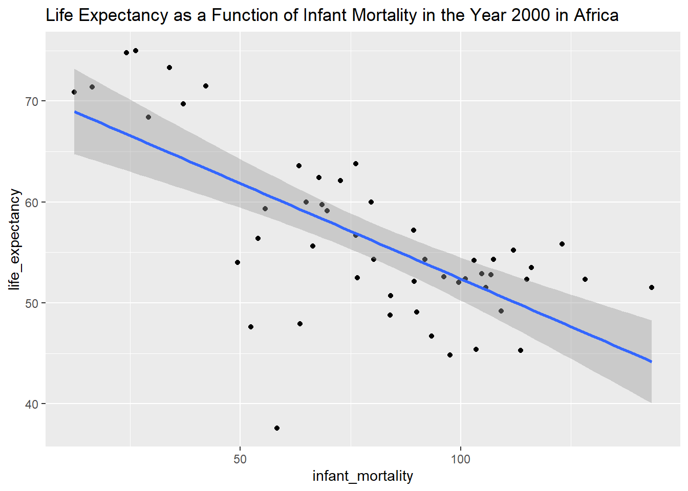

## starting httpd help server ... done## 'data.frame': 10545 obs. of 9 variables:
## $ country : Factor w/ 185 levels "Albania","Algeria",..: 1 2 3 4 5 6 7 8 9 10 ...
## $ year : int 1960 1960 1960 1960 1960 1960 1960 1960 1960 1960 ...
## $ infant_mortality: num 115.4 148.2 208 NA 59.9 ...
## $ life_expectancy : num 62.9 47.5 36 63 65.4 ...
## $ fertility : num 6.19 7.65 7.32 4.43 3.11 4.55 4.82 3.45 2.7 5.57 ...
## $ population : num 1636054 11124892 5270844 54681 20619075 ...
## $ gdp : num NA 1.38e+10 NA NA 1.08e+11 ...
## $ continent : Factor w/ 5 levels "Africa","Americas",..: 4 1 1 2 2 3 2 5 4 3 ...
## $ region : Factor w/ 22 levels "Australia and New Zealand",..: 19 11 10 2 15 21 2 1 22 21 ...## country year infant_mortality
## Albania : 57 Min. :1960 Min. : 1.50
## Algeria : 57 1st Qu.:1974 1st Qu.: 16.00
## Angola : 57 Median :1988 Median : 41.50
## Antigua and Barbuda: 57 Mean :1988 Mean : 55.31
## Argentina : 57 3rd Qu.:2002 3rd Qu.: 85.10
## Armenia : 57 Max. :2016 Max. :276.90
## (Other) :10203 NA's :1453
## life_expectancy fertility population gdp
## Min. :13.20 Min. :0.840 Min. :3.124e+04 Min. :4.040e+07
## 1st Qu.:57.50 1st Qu.:2.200 1st Qu.:1.333e+06 1st Qu.:1.846e+09
## Median :67.54 Median :3.750 Median :5.009e+06 Median :7.794e+09
## Mean :64.81 Mean :4.084 Mean :2.701e+07 Mean :1.480e+11
## 3rd Qu.:73.00 3rd Qu.:6.000 3rd Qu.:1.523e+07 3rd Qu.:5.540e+10
## Max. :83.90 Max. :9.220 Max. :1.376e+09 Max. :1.174e+13
## NA's :187 NA's :185 NA's :2972
## continent region
## Africa :2907 Western Asia :1026
## Americas:2052 Eastern Africa : 912
## Asia :2679 Western Africa : 912
## Europe :2223 Caribbean : 741
## Oceania : 684 South America : 684
## Southern Europe: 684
## (Other) :5586## [1] "data.frame"#take data from African countries only
africadata <- gapminder[gapminder$continent=="Africa",]
str(africadata)## 'data.frame': 2907 obs. of 9 variables:
## $ country : Factor w/ 185 levels "Albania","Algeria",..: 2 3 18 22 26 27 29 31 32 33 ...
## $ year : int 1960 1960 1960 1960 1960 1960 1960 1960 1960 1960 ...
## $ infant_mortality: num 148 208 187 116 161 ...
## $ life_expectancy : num 47.5 36 38.3 50.3 35.2 ...
## $ fertility : num 7.65 7.32 6.28 6.62 6.29 6.95 5.65 6.89 5.84 6.25 ...
## $ population : num 11124892 5270844 2431620 524029 4829291 ...
## $ gdp : num 1.38e+10 NA 6.22e+08 1.24e+08 5.97e+08 ...
## $ continent : Factor w/ 5 levels "Africa","Americas",..: 1 1 1 1 1 1 1 1 1 1 ...
## $ region : Factor w/ 22 levels "Australia and New Zealand",..: 11 10 20 17 20 5 10 20 10 10 ...## country year infant_mortality life_expectancy
## Algeria : 57 Min. :1960 Min. : 11.40 Min. :13.20
## Angola : 57 1st Qu.:1974 1st Qu.: 62.20 1st Qu.:48.23
## Benin : 57 Median :1988 Median : 93.40 Median :53.98
## Botswana : 57 Mean :1988 Mean : 95.12 Mean :54.38
## Burkina Faso: 57 3rd Qu.:2002 3rd Qu.:124.70 3rd Qu.:60.10
## Burundi : 57 Max. :2016 Max. :237.40 Max. :77.60
## (Other) :2565 NA's :226
## fertility population gdp continent
## Min. :1.500 Min. : 41538 Min. :4.659e+07 Africa :2907
## 1st Qu.:5.160 1st Qu.: 1605232 1st Qu.:8.373e+08 Americas: 0
## Median :6.160 Median : 5570982 Median :2.448e+09 Asia : 0
## Mean :5.851 Mean : 12235961 Mean :9.346e+09 Europe : 0
## 3rd Qu.:6.860 3rd Qu.: 13888152 3rd Qu.:6.552e+09 Oceania : 0
## Max. :8.450 Max. :182201962 Max. :1.935e+11
## NA's :51 NA's :51 NA's :637
## region
## Eastern Africa :912
## Western Africa :912
## Middle Africa :456
## Northern Africa :342
## Southern Africa :285
## Australia and New Zealand: 0
## (Other) : 0#Create two new variables (obj1, obj2) from africadata
obj1 <- africadata[,c("infant_mortality","life_expectancy")]
obj2 <- africadata[,c("population", "life_expectancy")]
str(obj1)## 'data.frame': 2907 obs. of 2 variables:
## $ infant_mortality: num 148 208 187 116 161 ...
## $ life_expectancy : num 47.5 36 38.3 50.3 35.2 ...## 'data.frame': 2907 obs. of 2 variables:
## $ population : num 11124892 5270844 2431620 524029 4829291 ...
## $ life_expectancy: num 47.5 36 38.3 50.3 35.2 ...## infant_mortality life_expectancy
## Min. : 11.40 Min. :13.20
## 1st Qu.: 62.20 1st Qu.:48.23
## Median : 93.40 Median :53.98
## Mean : 95.12 Mean :54.38
## 3rd Qu.:124.70 3rd Qu.:60.10
## Max. :237.40 Max. :77.60
## NA's :226## population life_expectancy
## Min. : 41538 Min. :13.20
## 1st Qu.: 1605232 1st Qu.:48.23
## Median : 5570982 Median :53.98
## Mean : 12235961 Mean :54.38
## 3rd Qu.: 13888152 3rd Qu.:60.10
## Max. :182201962 Max. :77.60
## NA's :51#ploting
plot(obj1$infant_mortality, obj1$life_expectancy,
xlab = "Infant mortality", ylab = "Life expectancy",
main="Correlation of infant mortality and life expectancy in Africa", cex.main=0.9)
plot(log(obj2$population), obj2$life_expectancy,
xlab = "log of population", ylab = "life expectancy",
main = 'Correlation of population size and life expectancy in Africa', cex.main=0.9)
#The streaks present countries. Generally, all countries with different population size has increase life expectancy and population over time
#Gapmider report data from 1960 to 2016. The table below showed number of missing and non-missing in infant_mortality in every year
table(as.factor(africadata$year), is.na(africadata$infant_mortality),
dnn = c("year", "Missing infant mortality"))## Missing infant mortality
## year FALSE TRUE
## 1960 41 10
## 1961 34 17
## 1962 35 16
## 1963 35 16
## 1964 36 15
## 1965 37 14
## 1966 38 13
## 1967 40 11
## 1968 40 11
## 1969 44 7
## 1970 46 5
## 1971 45 6
## 1972 45 6
## 1973 45 6
## 1974 46 5
## 1975 46 5
## 1976 48 3
## 1977 48 3
## 1978 49 2
## 1979 49 2
## 1980 50 1
## 1981 50 1
## 1982 51 0
## 1983 51 0
## 1984 51 0
## 1985 51 0
## 1986 51 0
## 1987 51 0
## 1988 51 0
## 1989 51 0
## 1990 51 0
## 1991 51 0
## 1992 51 0
## 1993 51 0
## 1994 51 0
## 1995 51 0
## 1996 51 0
## 1997 51 0
## 1998 51 0
## 1999 51 0
## 2000 51 0
## 2001 51 0
## 2002 51 0
## 2003 51 0
## 2004 51 0
## 2005 51 0
## 2006 51 0
## 2007 51 0
## 2008 51 0
## 2009 51 0
## 2010 51 0
## 2011 51 0
## 2012 51 0
## 2013 51 0
## 2014 51 0
## 2015 51 0
## 2016 0 51#subset data from africadata which contain only year 2000
year2000 <- africadata[africadata$year==2000,]
str(year2000)## 'data.frame': 51 obs. of 9 variables:
## $ country : Factor w/ 185 levels "Albania","Algeria",..: 2 3 18 22 26 27 29 31 32 33 ...
## $ year : int 2000 2000 2000 2000 2000 2000 2000 2000 2000 2000 ...
## $ infant_mortality: num 33.9 128.3 89.3 52.4 96.2 ...
## $ life_expectancy : num 73.3 52.3 57.2 47.6 52.6 46.7 54.3 68.4 45.3 51.5 ...
## $ fertility : num 2.51 6.84 5.98 3.41 6.59 7.06 5.62 3.7 5.45 7.35 ...
## $ population : num 31183658 15058638 6949366 1736579 11607944 ...
## $ gdp : num 5.48e+10 9.13e+09 2.25e+09 5.63e+09 2.61e+09 ...
## $ continent : Factor w/ 5 levels "Africa","Americas",..: 1 1 1 1 1 1 1 1 1 1 ...
## $ region : Factor w/ 22 levels "Australia and New Zealand",..: 11 10 20 17 20 5 10 20 10 10 ...## country year infant_mortality life_expectancy
## Algeria : 1 Min. :2000 Min. : 12.30 Min. :37.60
## Angola : 1 1st Qu.:2000 1st Qu.: 60.80 1st Qu.:51.75
## Benin : 1 Median :2000 Median : 80.30 Median :54.30
## Botswana : 1 Mean :2000 Mean : 78.93 Mean :56.36
## Burkina Faso: 1 3rd Qu.:2000 3rd Qu.:103.30 3rd Qu.:60.00
## Burundi : 1 Max. :2000 Max. :143.30 Max. :75.00
## (Other) :45
## fertility population gdp continent
## Min. :1.990 Min. : 81154 Min. :2.019e+08 Africa :51
## 1st Qu.:4.150 1st Qu.: 2304687 1st Qu.:1.274e+09 Americas: 0
## Median :5.550 Median : 8799165 Median :3.238e+09 Asia : 0
## Mean :5.156 Mean : 15659800 Mean :1.155e+10 Europe : 0
## 3rd Qu.:5.960 3rd Qu.: 17391242 3rd Qu.:8.654e+09 Oceania : 0
## Max. :7.730 Max. :122876723 Max. :1.329e+11
##
## region
## Eastern Africa :16
## Western Africa :16
## Middle Africa : 8
## Northern Africa : 6
## Southern Africa : 5
## Australia and New Zealand: 0
## (Other) : 0#plotting again
plot(year2000$infant_mortality, year2000$life_expectancy,
xlab = "Infant mortality", ylab = "Life expectancy",
main="Correlation of infant mortality and life expectancy in
Africa in 2000", cex.main=0.9)
plot(log(year2000$population), year2000$life_expectancy,
xlab = "log of population", ylab = "life expectancy",
main = 'Population size and life expectancy in Africa in 2000',
cex.main=0.9)
fit1 <- lm(year2000$life_expectancy ~ year2000$infant_mortality)
fit2 <- lm(year2000$life_expectancy ~ year2000$population)
summary(fit1)##
## Call:
## lm(formula = year2000$life_expectancy ~ year2000$infant_mortality)
##
## Residuals:
## Min 1Q Median 3Q Max
## -22.6651 -3.7087 0.9914 4.0408 8.6817
##
## Coefficients:
## Estimate Std. Error t value Pr(>|t|)
## (Intercept) 71.29331 2.42611 29.386 < 2e-16 ***
## year2000$infant_mortality -0.18916 0.02869 -6.594 2.83e-08 ***
## ---
## Signif. codes: 0 '***' 0.001 '**' 0.01 '*' 0.05 '.' 0.1 ' ' 1
##
## Residual standard error: 6.221 on 49 degrees of freedom
## Multiple R-squared: 0.4701, Adjusted R-squared: 0.4593
## F-statistic: 43.48 on 1 and 49 DF, p-value: 2.826e-08##
## Call:
## lm(formula = year2000$life_expectancy ~ year2000$population)
##
## Residuals:
## Min 1Q Median 3Q Max
## -18.429 -4.602 -2.568 3.800 18.802
##
## Coefficients:
## Estimate Std. Error t value Pr(>|t|)
## (Intercept) 5.593e+01 1.468e+00 38.097 <2e-16 ***
## year2000$population 2.756e-08 5.459e-08 0.505 0.616
## ---
## Signif. codes: 0 '***' 0.001 '**' 0.01 '*' 0.05 '.' 0.1 ' ' 1
##
## Residual standard error: 8.524 on 49 degrees of freedom
## Multiple R-squared: 0.005176, Adjusted R-squared: -0.01513
## F-statistic: 0.2549 on 1 and 49 DF, p-value: 0.6159Infant mortality was statistically significant with life expectancy (t-value=-6.59, d.f=49, p-value=2.83e-08). When infant mortality rate increase one unit, the life expectancy decrease 0.189 (SE= 0.0287).
Population size was not associated with life expectancy (t-value=0.505, d.f=49, p-value=0.616).
We will first load all the relevant libraries in order to use the tidyverse functions. While dslabs is already input above, I repeated in order to have information in one place. This will include dslabs, tidyverse, and skimr.
##
## Attaching package: 'skimr'## The following object is masked from 'package:stats':
##
## filterOnce that has taken place, we can start looking at our data set with the glimpse and skim functions.
## Observations: 10,545
## Variables: 9
## $ country <fct> Albania, Algeria, Angola, Antigua and Barbuda...
## $ year <int> 1960, 1960, 1960, 1960, 1960, 1960, 1960, 196...
## $ infant_mortality <dbl> 115.40, 148.20, 208.00, NA, 59.87, NA, NA, 20...
## $ life_expectancy <dbl> 62.87, 47.50, 35.98, 62.97, 65.39, 66.86, 65....
## $ fertility <dbl> 6.19, 7.65, 7.32, 4.43, 3.11, 4.55, 4.82, 3.4...
## $ population <dbl> 1636054, 11124892, 5270844, 54681, 20619075, ...
## $ gdp <dbl> NA, 13828152297, NA, NA, 108322326649, NA, NA...
## $ continent <fct> Europe, Africa, Africa, Americas, Americas, A...
## $ region <fct> Southern Europe, Northern Africa, Middle Afri...As we can see, these present summaries of our data set that are a bit easier to read that what we saw with the summary function.
Now that we’ve checked the data set, we want to work with it a bit to generate some plots. First, we are going to filter and select to extract the African countries from gapminder, and then leave out all variables except infant_mortality, life_expectancy, population, and country.
From here, we will also plot the data for the remaining variables, starting with life expectancy as a function of infant mortality.
gapminder %>%
filter(continent == "Africa") %>%
select(infant_mortality, life_expectancy, population, country) %>%
ggplot() + geom_point(aes(infant_mortality, life_expectancy, col= country)) + labs(title= "Life Expectancy as a Function of Infant Mortality by African Country")## Warning: Removed 226 rows containing missing values (geom_point).
As we would expect, as infant mortality increases, life expectancy decreases. We can also see that 226 values have been removed as they are missing parameter values.
We will now look at life expectancy as a function of population.
gapminder %>%
filter(continent == "Africa") %>%
select(infant_mortality, life_expectancy, population, country) %>%
ggplot() + geom_point(aes(population, life_expectancy, col= country)) + labs(title= "Life Expectancy as a Function of Population by African Country")## Warning: Removed 51 rows containing missing values (geom_point). One of the issues we found with the basicR functions is that we could see these same strings of data points but could only make educated guesses as to why the strings of data occured. Here, we can see that overall, as the population increases, the life expectancy increases; however, this trend is is fairly contained within each country.
Finally, we want to pull out the African data we’ve been using, but only for the year 2000. From here, we are going to create a third ggplot with life_expectancy as a function of infant_mortality. We will also include a linear model fit for this data.
gapminder %>%
filter(continent == "Africa", year == 2000) %>%
select(infant_mortality, life_expectancy, population, country) %>%
ggplot(aes(infant_mortality, life_expectancy)) + geom_point() +geom_smooth(method = "lm") + labs(title= "Life Expectancy as a Function of Infant Mortality in the Year 2000 in Africa")
We can see that the same trend from all years still holds true. As infant mortality increases, life expectancy decreases across Africa.